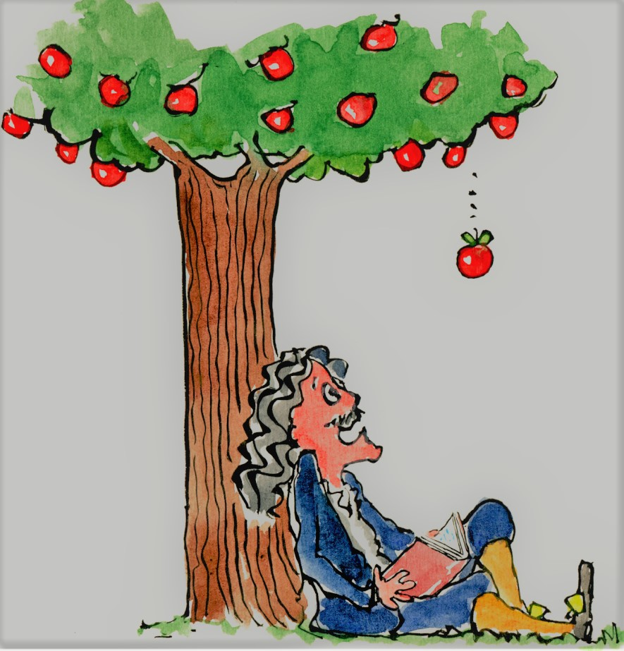
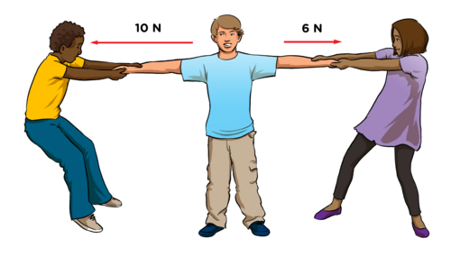
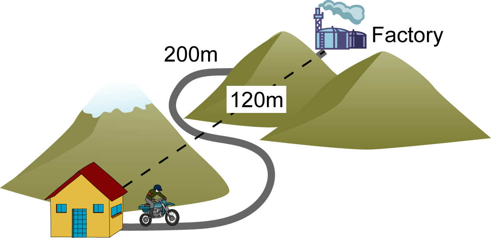

Force Introduction
Force is a concept , if suppose body A hits you that means body A exerts a force on you . As we know that all the bodies present in
the universe exerts a some force on one another , as we all know that when newton is taking rest under an apple tree then sudden an
apple is fallen down to earth and that is why because gravitational force exerts some force upon it and pull that apple towards itself .

Natursl state of body is suppose to be in rest position , if you apply some force on a body the body ultimately comes to rest .

in the given figure the two person apply some force on a cart and try to move in a certain direction , first cart will move untill they
apply some force on it after that it stop moving and come to its natural position .the concept behind this activity is that untill the
force is acting on the cart is increases the the velocity of the cart is increases continuously after that finally it's velocity goes
down to 0 .
Newton's First Law - A body either remains at rest or continues to move untill an external force act on it . This is also
known as law of inertia .
Force In The Same Direction -

in the given figure , A girl apply force F1 on the kids cycle and a boy apply some force F2 on the same kids cycle
and both the force are acting on the same direction . so that the total force acting on that kids cycle is the sum of both the forces
i.e. Total Force on kids cycle = F1 + F2 .
Force In Opposite Direction -

In the given figure , A girl pulls one hand of Boy 1 towards herself with some force F1 and A boy pulls the other hand of
Boy 1 towards himself with some force F2 . Here both the forces are in opposite direction so the total force acting on the
Boy 1 is the difference between the forces F1 & F2 .
Total Force acting on Boy 1 = F1 - F2 .
if the total force is positive that means girl apply greater force & Boy 1 move towards girl .
if the total force is negative that means boy apply greater force & Boy 1 move towards boy .
Distance - The total length between two points in space is known as distance .
Displcement - The shortest length between two points in space is known as distance .

in the given example the total length 200m is the distance and the length 120m is the displacement between home and the factory .
Velocity - Rate of change of displacement is known as velocity .
Speed - Rate of change of distance is known as speed .
Acceleration - Rate of change of velocity is known as acceleration .